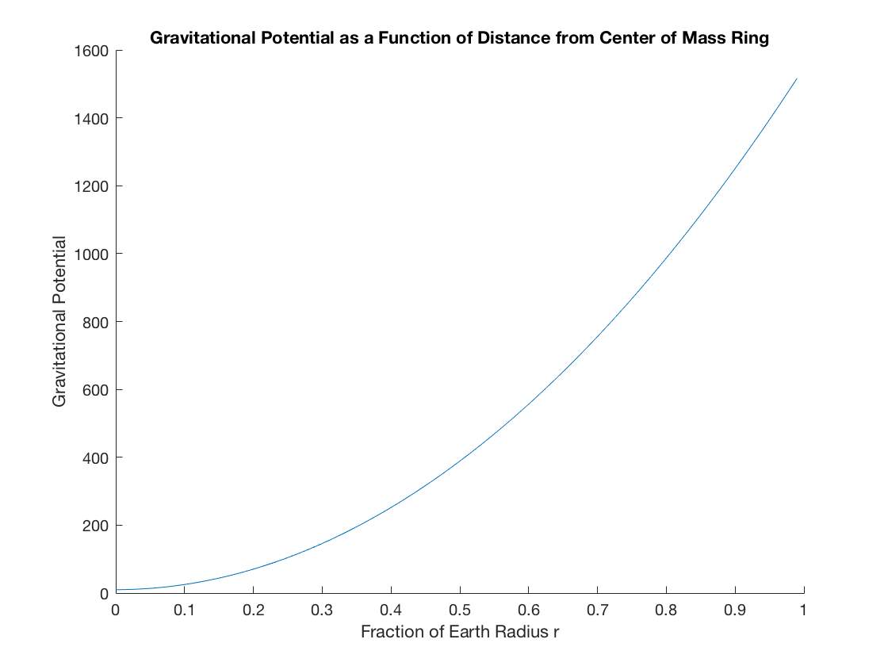

Fowels and Cassidy Problem C 5.1
Luke Polson V00849485
Contents
Part A
See scanned page at the end of this document.
Part B
Defines all Constants
r=1.496*10^11;
M=1.90*10^27;
R=7.784*10^11;
G=6.67*10^-11;
% This is the ``correct'' value for phi (still an approximation)
Phi_b=-(G*M/R)*(1+(r^2)/(4*R^2)+(3*r^4)/(8*R^4))
Phi_b = -1.6440e+05
Part C
We explain the algorithm used below. n is the number of points placed around the ring. In the while loop, 10000 is an arbitrary large number of points used. theta0 is the angular spacing between points on the ring. theta is the angle with respect to the z unit vector. (we put earth at r in the z direction). The first forloop adds up the contributions from all the masses and calculates the total gravitational potential. The if statement after the for loop checks if the current calculated value of phi (using n points) and the value of phi calculated previouslly (n/2 points) differ by less than 1/10000. If they do, then the value of large_enough_n is determined to be n. The sequence of phi_prev and phi are included after this code for clarity on how the algorothm works.
Phi_prev=-10000; %Starts previous value at some far off number. n=2; large_enough_n=0; while (n<100000) Phi=0; theta0=2*pi/n; for theta = 0:theta0:2*pi Phi=Phi-G*(M/(n))/(r^2+R^2-2*r*R*cos(theta))^(0.5); end if(abs(Phi-Phi_prev)/abs(Phi)<1.0/10000) large_enough_n=n break; end X = ['For n=',num2str(n),' we have that phi= ',num2str(Phi),' and phi_prev=',num2str(Phi_prev)]; disp(X) Phi_prev=Phi; n=2*n; end
For n=2 we have that phi= -269823.8709 and phi_prev=-10000
For n=4 we have that phi= -214853.1052 and phi_prev=-269823.8709
For n=8 we have that phi= -189536.7326 and phi_prev=-214853.1052
For n=16 we have that phi= -176940.1977 and phi_prev=-189536.7326
For n=32 we have that phi= -170641.9908 and phi_prev=-176940.1977
For n=64 we have that phi= -167492.8873 and phi_prev=-170641.9908
For n=128 we have that phi= -165918.3356 and phi_prev=-167492.8873
For n=256 we have that phi= -165131.0597 and phi_prev=-165918.3356
For n=512 we have that phi= -164737.4218 and phi_prev=-165131.0597
For n=1024 we have that phi= -164540.6028 and phi_prev=-164737.4218
For n=2048 we have that phi= -164442.1934 and phi_prev=-164540.6028
For n=4096 we have that phi= -164392.9886 and phi_prev=-164442.1934
For n=8192 we have that phi= -164368.3863 and phi_prev=-164392.9886
large_enough_n =
16384
Part D
We use the value of large_enough_n for our calcuations. m is the number of r values used. (i.e m=5 implies r=0, r=0.2, r=0.4, r=0.6, r=0.8 were used).
For R=0R
R_curr=0*R; Phi_prev=-10000; %Starts previous value at some far off number. n=2; large_enough_n=0; while (n<100000) Phi=0; theta0=2*pi/n; for theta = 0:theta0:2*pi Phi=Phi-G*(M/(n))/(r^2+R_curr^2-2*r*R_curr*cos(theta))^(0.5); end if(abs(Phi-Phi_prev)/abs(Phi)<1.0/10000) large_enough_n=n break; end X = ['For n=',num2str(n),' we have that phi= ',num2str(Phi),' and phi_prev=',num2str(Phi_prev)]; disp(X) Phi_prev=Phi; n=2*n; end
For n=2 we have that phi= -1270688.5027 and phi_prev=-10000
For n=4 we have that phi= -1058907.0856 and phi_prev=-1270688.5027
For n=8 we have that phi= -953016.377 and phi_prev=-1058907.0856
For n=16 we have that phi= -900071.0227 and phi_prev=-953016.377
For n=32 we have that phi= -873598.3456 and phi_prev=-900071.0227
For n=64 we have that phi= -860362.007 and phi_prev=-873598.3456
For n=128 we have that phi= -853743.8377 and phi_prev=-860362.007
For n=256 we have that phi= -850434.7531 and phi_prev=-853743.8377
For n=512 we have that phi= -848780.2108 and phi_prev=-850434.7531
For n=1024 we have that phi= -847952.9396 and phi_prev=-848780.2108
For n=2048 we have that phi= -847539.304 and phi_prev=-847952.9396
For n=4096 we have that phi= -847332.4862 and phi_prev=-847539.304
For n=8192 we have that phi= -847229.0773 and phi_prev=-847332.4862
large_enough_n =
16384
For R=0.2R
R_curr=0.2*R; Phi_prev=-10000; %Starts previous value at some far off number. n=2; large_enough_n=0; while (n<1000000) Phi=0; theta0=2*pi/n; for theta = 0:theta0:2*pi Phi=Phi-G*(M/(n))/(r^2+R_curr^2-2*r*R_curr*cos(theta))^(0.5); end if(abs(Phi-Phi_prev)/abs(Phi)<1.0/10000) large_enough_n=n break; end X = ['For n=',num2str(n),' we have that phi= ',num2str(Phi),' and phi_prev=',num2str(Phi_prev)]; disp(X) Phi_prev=Phi; n=2*n; end
For n=2 we have that phi= -21051313.5482 and phi_prev=-10000
For n=4 we have that phi= -10819137.7598 and phi_prev=-21051313.5482
For n=8 we have that phi= -5792779.5455 and phi_prev=-10819137.7598
For n=16 we have that phi= -3369720.229 and phi_prev=-5792779.5455
For n=32 we have that phi= -2245547.1578 and phi_prev=-3369720.229
For n=64 we have that phi= -1760083.4716 and phi_prev=-2245547.1578
For n=128 we have that phi= -1566052.2385 and phi_prev=-1760083.4716
For n=256 we have that phi= -1482881.0649 and phi_prev=-1566052.2385
For n=512 we have that phi= -1442162.9824 and phi_prev=-1482881.0649
For n=1024 we have that phi= -1421807.7576 and phi_prev=-1442162.9824
For n=2048 we have that phi= -1411630.1453 and phi_prev=-1421807.7576
For n=4096 we have that phi= -1406541.3392 and phi_prev=-1411630.1453
For n=8192 we have that phi= -1403996.9361 and phi_prev=-1406541.3392
For n=16384 we have that phi= -1402724.7345 and phi_prev=-1403996.9361
For n=32768 we have that phi= -1402088.6338 and phi_prev=-1402724.7345
For n=65536 we have that phi= -1401770.5834 and phi_prev=-1402088.6338
For n=131072 we have that phi= -1401611.5582 and phi_prev=-1401770.5834
large_enough_n =
262144
For R=0.4R
R_curr=0.4*R; Phi_prev=-10000; %Starts previous value at some far off number. n=2; large_enough_n=0; while (n<1000000) Phi=0; theta0=2*pi/n; for theta = 0:theta0:2*pi Phi=Phi-G*(M/(n))/(r^2+R_curr^2-2*r*R_curr*cos(theta))^(0.5); end if(abs(Phi-Phi_prev)/abs(Phi)<1.0/10000) large_enough_n=n break; end X = ['For n=',num2str(n),' we have that phi= ',num2str(Phi),' and phi_prev=',num2str(Phi_prev)]; disp(X) Phi_prev=Phi; n=2*n; end
For n=2 we have that phi= -920907.7297 and phi_prev=-10000
For n=4 we have that phi= -643889.3431 and phi_prev=-920907.7297
For n=8 we have that phi= -532602.4945 and phi_prev=-643889.3431
For n=16 we have that phi= -483123.667 and phi_prev=-532602.4945
For n=32 we have that phi= -458639.9796 and phi_prev=-483123.667
For n=64 we have that phi= -446398.6576 and phi_prev=-458639.9796
For n=128 we have that phi= -440277.9966 and phi_prev=-446398.6576
For n=256 we have that phi= -437217.666 and phi_prev=-440277.9966
For n=512 we have that phi= -435687.5008 and phi_prev=-437217.666
For n=1024 we have that phi= -434922.4182 and phi_prev=-435687.5008
For n=2048 we have that phi= -434539.8769 and phi_prev=-434922.4182
For n=4096 we have that phi= -434348.6062 and phi_prev=-434539.8769
For n=8192 we have that phi= -434252.9709 and phi_prev=-434348.6062
For n=16384 we have that phi= -434205.1532 and phi_prev=-434252.9709
large_enough_n =
32768
For R=0.6R
R_curr=0.6*R; Phi_prev=-10000; %Starts previous value at some far off number. n=2; large_enough_n=0; while (n<100000) Phi=0; theta0=2*pi/n; for theta = 0:theta0:2*pi Phi=Phi-G*(M/(n))/(r^2+R_curr^2-2*r*R_curr*cos(theta))^(0.5); end if(abs(Phi-Phi_prev)/abs(Phi)<1.0/10000) large_enough_n=n break; end X = ['For n=',num2str(n),' we have that phi= ',num2str(Phi),' and phi_prev=',num2str(Phi_prev)]; disp(X) Phi_prev=Phi; n=2*n; end
For n=2 we have that phi= -501983.5481 and phi_prev=-10000
For n=4 we have that phi= -380198.7644 and phi_prev=-501983.5481
For n=8 we have that phi= -328655.7182 and phi_prev=-380198.7644
For n=16 we have that phi= -303691.7241 and phi_prev=-328655.7182
For n=32 we have that phi= -291215.9403 and phi_prev=-303691.7241
For n=64 we have that phi= -284978.0488 and phi_prev=-291215.9403
For n=128 we have that phi= -281859.1031 and phi_prev=-284978.0488
For n=256 we have that phi= -280299.6303 and phi_prev=-281859.1031
For n=512 we have that phi= -279519.8939 and phi_prev=-280299.6303
For n=1024 we have that phi= -279130.0256 and phi_prev=-279519.8939
For n=2048 we have that phi= -278935.0915 and phi_prev=-279130.0256
For n=4096 we have that phi= -278837.6245 and phi_prev=-278935.0915
For n=8192 we have that phi= -278788.891 and phi_prev=-278837.6245
large_enough_n =
16384
For R=0.8R
R_curr=0.8*R; Phi_prev=-10000; %Starts previous value at some far off number. n=2; large_enough_n=0; while (n<100000) Phi=0; theta0=2*pi/n; for theta = 0:theta0:2*pi Phi=Phi-G*(M/(n))/(r^2+R_curr^2-2*r*R_curr*cos(theta))^(0.5); end if(abs(Phi-Phi_prev)/abs(Phi)<1.0/10000) large_enough_n=n break; end X = ['For n=',num2str(n),' we have that phi= ',num2str(Phi),' and phi_prev=',num2str(Phi_prev)]; disp(X) Phi_prev=Phi; n=2*n; end
For n=2 we have that phi= -349905.1696 and phi_prev=-10000
For n=4 we have that phi= -273892.7423 and phi_prev=-349905.1696
For n=8 we have that phi= -240029.4858 and phi_prev=-273892.7423
For n=16 we have that phi= -223287.3136 and phi_prev=-240029.4858
For n=32 we have that phi= -214916.6835 and phi_prev=-223287.3136
For n=64 we have that phi= -210731.3685 and phi_prev=-214916.6835
For n=128 we have that phi= -208638.711 and phi_prev=-210731.3685
For n=256 we have that phi= -207592.3822 and phi_prev=-208638.711
For n=512 we have that phi= -207069.2178 and phi_prev=-207592.3822
For n=1024 we have that phi= -206807.6356 and phi_prev=-207069.2178
For n=2048 we have that phi= -206676.8445 and phi_prev=-206807.6356
For n=4096 we have that phi= -206611.449 and phi_prev=-206676.8445
For n=8192 we have that phi= -206578.7512 and phi_prev=-206611.449
large_enough_n =
16384
Now we plot phi(r)-phi(0) as a function of r
m=100; spacing=1/m; Phi_0=-G*M/R; rvalues=zeros(1,m); phivalues=zeros(1,m); n=1; for rcurr=0:(1/m):(1-(1/m)) Phi=0; theta0=2*pi/large_enough_n; for theta = 0:theta0:2*pi Phi=Phi-G*(M/(large_enough_n))/((rcurr*r)^2+R^2-2*(rcurr*r)*R*cos(theta))^(0.5); end rvalues(1,n)=rcurr; phivalues(1,n)=abs(Phi-Phi_0); n=n+1; end figure('name','Part D2','NumberTitle','on'); hold on; title('Gravitational Potential as a Function of Distance from Center of Mass Ring') ylabel('Gravitational Potential') xlabel('Fraction of Earth Radius r') plot(rvalues, phivalues); hold off;